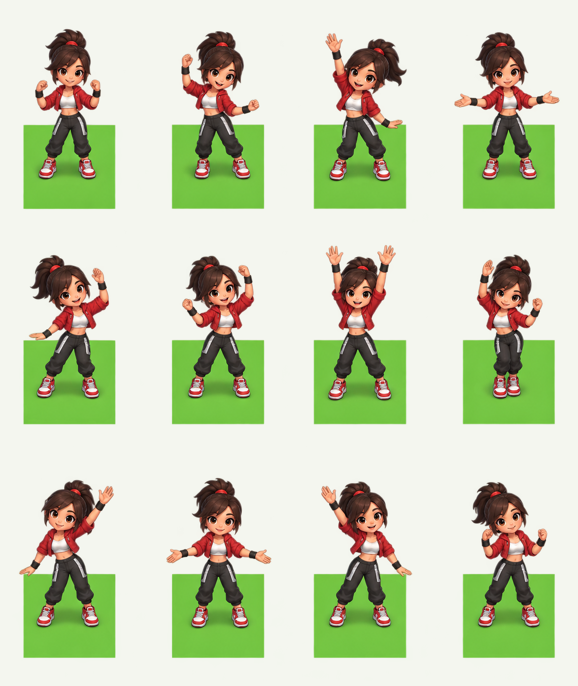
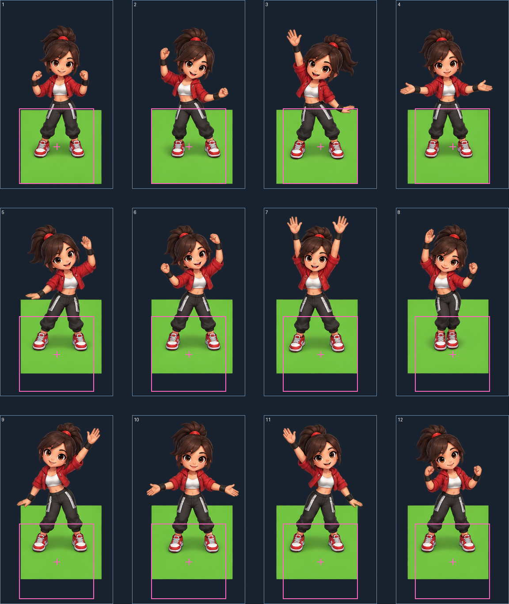

One original generated sheet. These previews display the source with its calibration floors. No processed sprites or runtime loop were produced.

Pink squares and crosses show the authored floors and ground roots, mapped by whole-sheet scale. The source artwork is unchanged.
